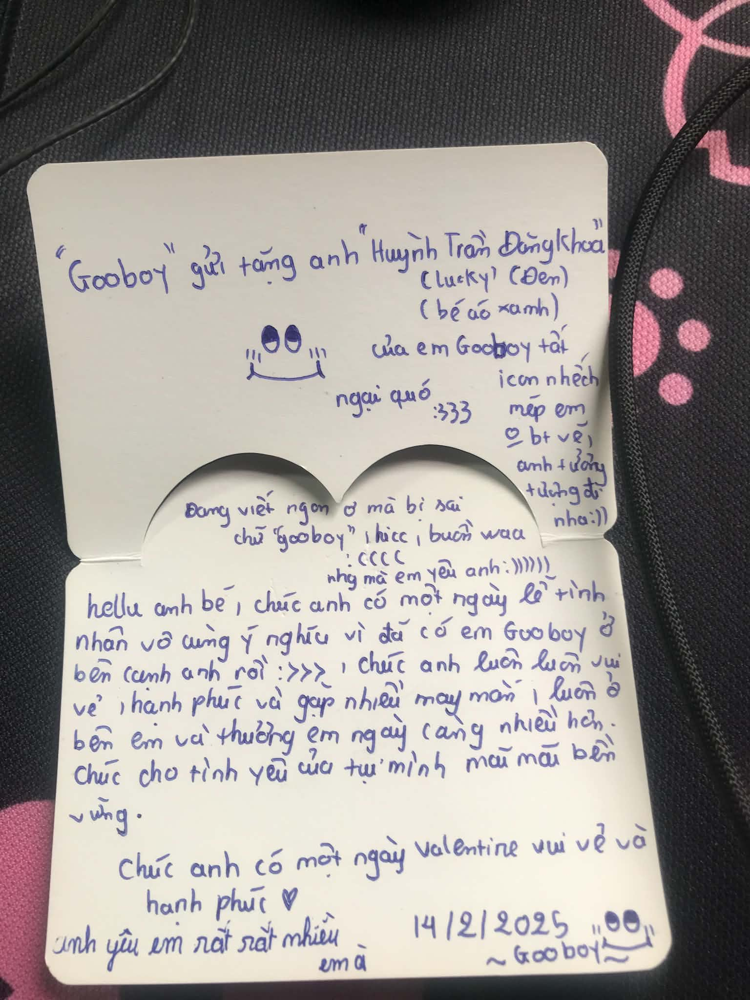

Gửi người từng là tất cả của tui…

Xin chào, gửi người từng là tất cả của tui.
Nhìn vậy mà tui và bạn đã dừng lại cũng được 5 tháng rồi. Nhanh thật ha, mới đó mà chúng ta đã không còn là gì của nhau nữa.
“Để mình bù đắp cho bạn nha”
Từ lúc bạn nói câu ấy, tui đã thật sự rung động. Tui không biết bạn có còn nhớ câu nói ấy không, nhưng với tui, nó từng có ý nghĩa rất đặc biệt. Chẳng hiểu sao chỉ một câu nói đơn giản như vậy thôi mà lại khiến tui cảm thấy được quan tâm, được trân trọng, và có cảm giác rằng cuối cùng cũng có một người muốn làm điều gì đó để tui vui hơn.
Lúc ấy, tui đâu có nghĩ rằng người nói câu đó với tui lại trở thành người mà sau này tui phải nhớ nhung nhiều đến vậy.
Ít ra, chúng ta dừng lại không phải vì ai phản bội ai, cũng chẳng phải vì có một người thứ ba xen vào giữa hai đứa. Có lẽ điều khiến tui đau lòng nhất chính là cảm giác tui đã đánh mất bạn.
Tui không biết phải diễn tả thế nào nữa. Có những chuyện khi còn ở bên nhau, tui cứ nghĩ rằng chỉ cần ngày mai vẫn còn cơ hội thì mọi thứ đều có thể sửa chữa. Tui cứ nghĩ rằng nếu hôm nay có chuyện gì chưa tốt, thì ngày mai tui sẽ làm tốt hơn. Nhưng tui đã không nhận ra rằng có những tổn thương, những thất vọng khi tích tụ đủ lâu sẽ khiến một người dần mệt mỏi và không còn muốn cố gắng nữa.
Có lẽ tui đã từng vô tâm vào những lúc bạn cần tui quan tâm. Có lẽ tui đã không hiểu được những điều bạn mong muốn, hoặc đã nghĩ rằng bạn sẽ luôn ở đó, rằng dù có chuyện gì thì chúng ta cũng sẽ tìm được cách quay về bên nhau.
Bây giờ bạn đã có người mới rồi, nhưng tui vẫn muốn chờ bạn.
Chúng ta đã dừng lại được 5 tháng. Bạn cũng đã bước tiếp trên con đường của mình, có một người mới để quan tâm, để trò chuyện và có lẽ cũng có những niềm vui mới. Còn tui, đôi khi vẫn cứ nhớ về những ngày tháng cũ, nhớ về một người từng khiến tui rung động chỉ bằng một câu nói đơn giản.
Tui biết hiện tại tui chẳng còn quyền gì để hỏi bạn hôm nay thế nào, có vui không, có chuyện gì khiến bạn buồn không. Tui cũng chẳng còn là người có thể nhắc nhở bạn ăn uống đầy đủ, hỏi han bạn mỗi ngày hay chúc bạn ngủ ngon trước khi kết thúc một ngày nữa rồi.
Những điều từng rất đỗi bình thường khi chúng ta còn bên nhau, bây giờ lại trở thành những điều tui chỉ có thể nhớ lại.
Đôi khi tui tự hỏi, không biết người mới của bạn có biết bạn thích gì, ghét gì, có biết những lúc bạn buồn thì nên dỗ dành bạn như thế nào không. Người ấy có khiến bạn cười nhiều không, có quan tâm bạn vào những lúc bạn mệt mỏi không. Tui mong người ấy sẽ làm được những điều mà có lẽ trước đây tui đã không làm tốt.
Nói thật, tui cũng buồn khi nghĩ đến việc bạn đang dành những điều từng thuộc về chúng ta cho một người khác. Tui đã từng rất hạnh phúc vì gặp được bạn, và cũng từng rất buồn vì đánh mất bạn.
Có lẽ bạn ghét tui, nhưng tui thật sự chưa từng ghét bạn. Dù mọi chuyện đã thay đổi, những cảm xúc tui từng có đều là thật. Tui không muốn phủ nhận những ngày tháng đã qua, cũng không muốn phủ nhận việc bạn từng là một người rất quan trọng đối với tui.
Những lần lầm lỗi của tui giờ đây có lẽ đã trở thành những điều khiến bạn tổn thương, khiến bạn thất vọng và chẳng còn muốn nhìn lại nữa. Tui biết có những lời xin lỗi không thể xóa đi những gì đã xảy ra, cũng có những chuyện dù hối hận đến đâu thì cũng chẳng thể quay về như lúc ban đầu.
Tui không mong bạn phải tha thứ, cũng không mong bạn quên đi những điều tui đã làm. Tui chỉ muốn bạn biết rằng, dù kết thúc của chúng ta có buồn đến thế nào, tui chưa từng hối hận vì đã gặp bạn.
Tui vẫn còn thương bạn. Và nếu sau này vẫn còn cơ hội, tui vẫn muốn được ở bên cạnh bạn một lần nữa, muốn được bù đắp những điều tui đã làm chưa tốt và trân trọng bạn nhiều hơn những ngày tháng trước đây. Tui không biết liệu điều đó có còn cơ hội xảy ra hay không, nhưng nếu được lựa chọn một lần nữa, người mà tui vẫn muốn cùng đi tiếp, chắc chắn vẫn là bạn. Tui không biết tương lai sẽ ra sao, cũng không biết liệu chúng ta còn cơ hội để quay về bên nhau hay không. Nhưng nếu trong lòng vẫn còn một điều mà tui chưa thể buông bỏ, thì đó chính là tình cảm tui dành cho bạn.
Cảm ơn bạn vì đã từng là một phần rất đẹp trong cuộc đời tui.

Và nếu có thể gửi đến bạn một lời cuối cùng lúc này, tui chỉ muốn nói rằng:
“Tui vẫn thương bạn. Và nếu sau này vẫn còn cơ hội, tui vẫn muốn được ở bên cạnh bạn một lần nữa, muốn được bù đắp những điều tui làm chưa tốt và trân trọng bạn nhiều hơn.”